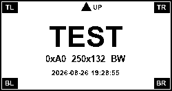
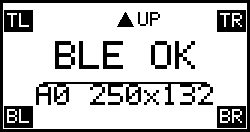
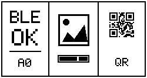

まず最初に：このESL端末は何をするものか
この機種へ直接渡すものは文字列ではなく、PC側で文字・絵・QRコードを配置した1枚の完成画像です。送信ツールが画像を端末用データへ変換し、BLEで端末へ書き込みます。
| 基本項目 | ざっくりした説明 | 確認区分 |
|---|---|---|
| 通信方式 | Bluetooth Low Energy（BLE）。2.4GHz帯を使い、PCと端末が近距離で直接通信します。通常の表示更新にWi-Fi、インターネット、IPアドレスは不要です。 | 実機確認済み |
| 表示方法 | PCで作った250×132ドットの完全な白黒画像を、1画面分まとめて転送します。 | 実機確認済み |
| 表示できるもの | 文字、数字、線画、簡単なアイコン、バーコード、QRコード。これらはすべて画像として送ります。 | 文字・線画・QR確認済み |
| 更新の性質 | 新しい画像を送るたびに画面全体を更新します。静止した案内を、ときどき変更する用途に向きます。動画や短い間隔での連続更新には向きません。 | 実装由来 |
| 電源 | 電池で動作します。電池の正確な型式・容量は、この個体について本書では確定していません。 | 一部未確認 |
| 電池寿命 | 2〜3年程度を導入計画上の大まかな目安にできます。ただし同型・類似品の販売情報に見られる値で、この購入個体での長期実測値でも、入手済みのメーカー公式保証値でもありません。更新回数、通信状態、温度、電池品質で大きく変わります。 | 目安・未実測 |
| 端末へ渡すデータ | 直接のテキスト命令ではなく画像データです。アプリから文字を表示したい場合も、PC側で文字を画像へ描いてから送ります。 | 現行経路で確認済み |
※「2〜3年」は交換時期を保証する数値ではありません。運用開始後は、更新回数と電池交換日を記録して、この環境での実寿命へ置き換えてください。
AIと一緒に、未知のESL端末を調べるという進め方
今回の調査では、利用者がChatGPTと会話しながら、指示された時点でESL端末の電源をOFF・ONしました。AI側はその前後のスキャン結果を比較し、「候補が消えたか」「同じ候補が再び現れたか」「接続できたか」「期待した応答が返ったか」を順番に整理しました。この手探りの確認を積み重ね、最終的に画像データの転送と実機表示まで到達しています。今回の実機で確認済み
人が担当すること
- 端末の電源OFF・ON、電池状態、距離など現物の操作
- 端末ラベルと画面の目視確認
- 周囲の同型端末や純正アプリを切り離す判断
- 端末へ書き込む直前の明示承認
- 表示結果や異常をAIへ正確に伝えること
AIが支援できること
- 安全なスキャン・比較・解析スクリプトの作成
- ON/OFF前後のログ差分と候補の整理
- GATT構造、応答、公開コード、資料の照合
- 次に確認すべき内容を一段ずつ提示
- 誤送信、無限再試行、OTA経路を避ける安全ゲートの実装
- 成功・失敗・未確認事項を文書として残すこと
他のESLにも応用できる範囲
条件付きで応用可能 通信方式がPCやスマートフォンから観測でき、端末が強い暗号化・認証・専用基地局だけに閉じていなければ、この調査方法は別機種にも応用できます。ただし、解像度、色、UUID、画像変換、パケット、ACKは機種ごとに再確認が必要で、今回の送信スクリプトをそのまま使用してはいけません。
AIは観測結果から仮説を作り、検証手順を組み立てる有力な支援者になりますが、現物を見たり電源を操作したりはできません。また、暗号化された独自プロトコルの解除や、根拠のない危険な書込みを正当化するものでもありません。人が現物を操作し、AIが分析し、重要操作は人が承認するという役割分担が、この方法の中心です。
この文書の位置づけ
これはベンダー公式仕様書ではありません。ローカルで取得したBLE広告・GATT列挙、監査したPython実装、複数回の成功転送、実機写真、QR読み取り結果から作成した「実装由来仕様」です。別型番・別ファームウェアへ無条件に適用しないでください。
0xA0、FEF0〜FEF2、コマンド値は、この機種で共通する開発用の短縮表記であり、個体識別子ではありません。
0. はじめての人は、ここだけ読めば操作できます
普段の操作で触るのは画像ファイル1枚だけです。 画像をSEND_IMAGE.cmdへドラッグ＆ドロップします。UUID、BLEアドレス、payload、ACKを手で指定する必要はありません。内部ではsend_image.pyが、画像検査・端末探索・通信確認・送信を順番に行います。
SENDと入力します。1. 画像を用意
250 × 132ピクセルの画像を1枚用意します。PNGを推奨します。
- カラーやグレーでも可
- 送信前に自動で完全な白黒へ変換
- サイズ違いは引き伸ばさず停止
まず試す画像: sample_clear_v3.png
{kind=link}
2. ドラッグ＆ドロップ
ExplorerでSEND_IMAGE.cmdを表示し、用意した画像をそのファイルの上へドラッグして離します。
画像.png
↓ ドラッグ＆ドロップ
SEND_IMAGE.cmd黒い画面が開き、自動でサイズ確認と対象端末の探索を始めます。
3. SENDで確定
対象端末が見つかると、実際に書き込む前に停止します。
送信する場合だけ SEND と入力:画像を送る場合だけ大文字でSENDと入力します。やめる場合は何も入力せずEnterを押します。
PowerShellから操作する場合
まず送信なしで検査し、確認OKを確認できます。
cd <ESL_PROJECT_DIR>\esl-control
.\.venv\Scripts\python.exe scripts\send_image.py images\clear_sample_adjusted_v3.png --check-only実際に送る場合は--check-onlyを外します。
.\.venv\Scripts\python.exe scripts\send_image.py images\clear_sample_adjusted_v3.png成功時
1/3 端末を探しています...
2/3 対象端末を確認しました。
送信する場合だけ SEND と入力: SEND
3/3 画像を送信しています...
送信完了: ESLの画面を目で確認してください。通信完了後、画面の向き・見切れ・内容を目で確認します。
止まったとき
- サイズが違う: 画像編集ソフトで250×132へ変更
- 端末が見つからない: 電池、Bluetooth、距離を確認
- 対象を1台にできない: 近くの同型端末をOFF
- 送信失敗: 連続実行せず、画面と電池状態を確認
- 中止したい:
SENDを入力せずEnter
FEF3やOTA UUIDを試す、失敗後に何度も連打する、別サイズの画像を無理に送る、送信中に電池を外す。通常操作では低レベルスクリプトを直接編集しません。1. 対象と非対象
対象
- BLE広告でModel ID
0xA0を示す2.1インチTFT ESL - GATT Service
FEF0とCharacteristicsFEF1/FEF2を持つ実機 - PC側で250×132の白黒画像を生成し、フルフレーム転送する処理
- Windows 11 + Python/Bleakを基準とし、将来Linux/Raspberry Piへ移植可能な分離構成
非対象
- Model IDが異なるEPD/ESL、250×122や250×128の別機種
- ファームウェア更新、Telink OAD/OTA、DFU、NVM、工場出荷リセット
- 意味が確定していない
FEF3へのRead/Write - 純正アプリの解析、認証回避、無承認の周辺端末操作
2. 開発・実行環境
| 項目 | 基準 | 備考 |
|---|---|---|
| OS | Windows 11 x64 | 確認済み Windows BLEスタックをBleakから利用 |
| Python | 3.14.4 / project-local .venv | 管理者権限は不要。グローバル環境を変更しない |
| BLE | bleak==3.0.2 | 接続、GATT列挙、通知、Write Without Response |
| 画像 | pillow==12.3.0 / numpy==2.5.2 | 描画、変換、比較 |
| 互換実装 | gicisky==0.2.1 | モデル・通信仕様の参照。現在の送信は監査済み独自変換を使用 |
| QR | qrcode==8.2 | ローカル生成。ネットワーク送信なし |
| 権限 | 通常ユーザー | Windows BluetoothはON、他アプリの接続は解除 |
再構築
cd <ESL_PROJECT_DIR>\esl-control
py -3.14 -m venv .venv
.\.venv\Scripts\python.exe -m pip install --disable-pip-version-check -r requirements.txt
.\.venv\Scripts\python.exe -m pip check
.\.venv\Scripts\python.exe scripts\check_environment.py
.\.venv\Scripts\python.exe -m unittest discover -s tests -v移植先ではPythonの版を先に固定し、同じ依存バージョンで再現試験を行います。BLEの最大Write長と通知タイミングはOS/backend依存のため、Windowsで成功しても自動的にLinux対応とはみなしません。
3. 構成と責務分離
表示要求
予定・タスク・状態を、名前やBLEアドレスを含まない抽象データとして受け取ります。
例: 「お知らせ」「次の作業」「完了」
レンダラー
文字・アイコン・QRを250×132の完全な白黒RGB画像へ描画し、レイアウト検査を行います。
BLEワーカー
ローカルの端末プロファイルを参照し、Fresh Scan、GATT Preflight、画像転送、結果記録を担当します。
4. BLE広告と端末識別
候補判定
| 観測項目 | 期待値 | 根拠区分 |
|---|---|---|
| Local Name | NEMR...、標準Device NameはPICKSMART | 確認済み 名前単独では判定しない |
| Service UUID | FEF0（短縮表記） | 確認済み 個体識別子ではない |
| Manufacturer ID | 0x5053 | 確認済み |
| Manufacturer Data byte 0 | 0xA0 | 確認済み Model ID |
| 電源OFF/ON | OFFで消失、ONで同一候補が1台だけ再出現 | 確認済み |
| 信頼度 | 0.80以上 | 実装由来 安全ゲート |
Manufacturer Dataの既知レイアウト
gicisky 0.2.1はManufacturer ID 0x5053の値を次のように解釈します。Model ID以外はこの実機で独立校正していないため、制御判断には使いません。
A0。確認済み識別手順
- 20〜30秒の受信専用スキャンを2回行い、候補が単一であることを確認。
- 操作者が電池をOFFにして再スキャンし、候補が消えることを確認。
- ONに戻して再スキャンし、同じ候補だけが戻ることを確認。
- 明示アドレスへRead-only接続し、FEF0/FEF1/FEF2の構成を確認。
- 以降も送信直前のFresh Scanで、アドレス・Model ID・FEF0・候補数を再確認。
5. GATTマップ
| UUID | 実機Properties | 本実装での扱い | 状態 |
|---|---|---|---|
FEF0 | Service | 表示更新サービス | 確認済み |
FEF1 | notify, write, write-without-response | コマンド送信とACK通知 | 使用 |
FEF2 | notify, write, write-without-response | 画像パケット送信。通知機能は使用しない | 使用 |
FEF3 | read, write | 意味不明。ReadもWriteもしない | 使用禁止 |
<OTA/OAD service> | 値は本書に非掲載 | Firmware更新系として表示経路から除外 | 使用禁止 |
<OTA/OAD characteristic> | 値は本書に非掲載 | Firmware経路。送信しない | 使用禁止 |
FEF0〜FEF3は機種共通の16-bit短縮表記です。実装ではBLE標準のBase UUIDへ展開しますが、本書ではIPアドレスや個体識別子と誤認されないよう長形式を掲載しません。Bluetooth SIGの説明ラベルやHandle番号も識別には使いません。
6. 表示更新プロトコル
7. パケット詳細
コマンドとACK
| 段階 | 方向 / Characteristic | バイト列 | 判定 |
|---|---|---|---|
| INIT | Host → FEF1 | 01 | 1 byte、Write Without Response |
| INIT ACK | FEF1 Notify → Host | 01 F4 00 | prefix完全一致。意味は実装由来 |
| SIZE | Host → FEF1 | 02 1D 10 00 00 00 00 00 | 0x0000101D = 4125をLittle Endian 32-bitで格納し、末尾3 zero |
| SIZE ACK | FEF1 Notify → Host | 02 00 10 | 実機観測値。現行writerは先頭02を必須判定 |
| START | Host → FEF1 | 03 | 画像ループ開始 |
| PART REQUEST | FEF1 Notify → Host | 05 00 pp pp pp pp | 05、error 00、要求partのLE32。期待連番と一致必須 |
| COMPLETE | FEF1 Notify → Host | 05 08 00 00 00 00 | error/code 08を完了として扱う。18 part送信済みでなければ異常 |
画像パケット
画像payloadは4,125 bytesです。17 × 240 + 45 = 4,125なので、画像Writeは18回。FEF1の3コマンドと合わせて、成功転送は合計21回のGATT Writeになります。
実機で観測したACK列
01 F4 00 # INIT ACK
02 00 10 # SIZE ACK（意味の詳細は未確定）
05 00 00 00 00 00 # part 0を要求
05 00 01 00 00 00 # part 1を要求
...
05 00 11 00 00 00 # part 17を要求
05 08 00 00 00 00 # 完了8. 画像変換仕様
入力契約
- サイズ: 正確に
250 × 132 - Mode:
RGB - 色:
(0,0,0)と(255,255,255)のみ - ディザリング: OFF
- 圧縮: なし
端末へ「テキスト」を直接送るのではなく、文字・絵・QRをPC側で1枚の画像へラスタライズします。現時点では部分更新命令も確認していないため、常にフルフレームです。
変換結果
- bit数:
250 × 132 = 33,000 bit - payload:
33,000 / 8 = 4,125 byte - bit順: 1 byte内はMSB first
- 白: 1、黒: 0
- 端数padding: なし
監査済み変換アルゴリズム
- 入力をRGBへ変換。
250×132から125×264へBICUBIC resize。- 90度反時計回りに回転して
264×125へ。 - 各行を右から左へ走査し、X座標を反転。
- R/G/Bがすべて128より大きければ白bit 1、それ以外は黒bit 0。
- bit 7からbit 0へ詰めて4,125 bytesを得る。
stage = input_rgb.resize((125, 264), BICUBIC)
stage = stage.rotate(90, expand=True) # 264 x 125
for y in range(125):
for x in range(263, -1, -1): # X coordinate reversed
r, g, b = stage[x, y]
bit = 1 if r > 128 and g > 128 and b > 128 else 0
append_msb_first(bit)
assert len(payload) == 4125gicisky 0.2.1のconverterも4,125 bytesを生成しますが、現在のプロジェクトが採用した方向補正とpayloadは一致しません。実機で方向確認済みのprepare_payload.pyを基準実装とし、ライブラリ変換へ無条件に置換しません。9. 一からの実装手順
初心者向け: 画像を1つ渡す
通常利用では、下記の1コマンドだけを使用します。端末設定・Fresh Scan・GATT確認・ACK処理はsend_image.pyが内部で実行します。
.\.venv\Scripts\python.exe scripts\send_image.py <250x132の画像ファイル>--check-onlyを付けると、画像とローカル設定の検査だけを行い、BLE通信は行いません。送信モードでもSENDを入力するまでは端末へWriteしません。
A. 安全な最小モジュール
| モジュール | 入力 | 出力 | 副作用 |
|---|---|---|---|
| Scanner | duration、任意ラベルsuffix | 候補一覧JSON | 広告受信のみ |
| Identifier | 2回以上のscan、OFF/ON証跡、GATT証跡 | local device profile | ローカルJSONのみ |
| Renderer | 表示要求 | 250×132 RGB/BW PNG | ローカル画像のみ |
| Payload Builder | PNG、profile、protocol | 4,125-byte bin、hash-bound plan | ローカルファイルのみ |
| Bounded Writer | plan、profile、fresh scan、承認 | 転送結果JSON | FEF1/FEF2へ1回の表示更新 |
B. 実装上の必須チェック
- スキャン結果は候補1台、Model ID 0xA0、FEF0あり、信頼度0.80以上。
- plan内のtargetとprofileのtargetが一致。
- payloadのファイル長と計算済みハッシュがplanに一致。
- FEF3/OTA UUIDのdeny-listがコードに固定され、送信先と交差しない。
- 接続後にFEF0/FEF1/FEF2とpropertiesを再確認。
- FEF1通知開始後、1.0秒待つ。
- すべてのACKを順序・長さ・code・part番号で検証。
- 異常通知、timeout、part不一致では直ちに停止し、再送しない。
- finallyでNotify停止とdisconnectを実行。
- 端末表示は読戻せないため、転送成功と目視成功を別々に記録。
C. 現行ツールによる再現
# 1) Read-only scan（最低2回）
.\.venv\Scripts\python.exe scripts\scan_ble.py --duration 20
# 2) Read-only GATT（保存済みprofileの正確なアドレスを使用）
.\.venv\Scripts\python.exe scripts\inspect_gatt.py --address <LOCAL_PROFILE_ADDRESS>
# 3) ローカル画像とpayloadの準備
.\.venv\Scripts\python.exe scripts\render_layout_samples.py
.\.venv\Scripts\python.exe scripts\prepare_payload.py --image images\three_panel_text_picture_qr.png --profile evidence\device_profile_<LATEST>.json --protocol config\protocol_model_a0.json
# 4) exact planに対する承認後だけ1回転送
.\.venv\Scripts\python.exe scripts\write_test_image.py --plan evidence\write_plan_<LATEST>.json --profile evidence\device_profile_<LATEST>.json --scan logs\ble_scan_<FRESH>.json --approve --approval-note "<承認内容>"この文書の作成時にはBLE接続・送信を実行していません。上記は既存の承認境界を示す再現コマンドです。
10. 状態・タイムアウト・復旧
推奨状態機械
IDLE
→ DISCOVERING
→ IDENTIFIED
→ RENDERED
→ APPROVAL_REQUIRED
→ CONNECTING
→ PREFLIGHT
→ SUBSCRIBED
→ SENDING_COMMANDS
→ SENDING_PARTS
→ COMPLETED
→ DISCONNECTED
→ VISUAL_CONFIRMATIONどの送信状態から失敗してもABORTING → DISCONNECTED → FAILEDへ進みます。自動でSENDINGへ戻りません。
現行の境界値
| 接続timeout | 既定15秒、許容5〜60秒 |
|---|---|
| ACK timeout | 既定5秒、許容1〜15秒 |
| 全転送timeout | 90秒 |
| 通知安定化 | 1.0秒 |
| part送信後wait | 30 ms |
| 自動retry | 0回 |
失敗時の扱い
| 失敗 | 動作 | 再開条件 |
|---|---|---|
| 候補0台/複数台 | 送信前にBLOCKED | 電池・距離・他アプリ接続を確認し、新しいscanを保存 |
| GATT構成変化 | 0 writeで停止 | Read-only再調査。別firmwareなら新しい仕様として扱う |
| INIT ACKなし | 停止、切断。画像は送らない | ログ確認、電源サイクル、別の明示承認 |
| 未知ACK / part不一致 | 即時停止、切断 | プロトコル調査。推測で次partを送らない |
| 05 08前の切断 | 転送失敗として記録 | 端末状態を目視し、新しい画像planと承認を用意 |
| 通信PASS・表示不正 | 回転/ミラー/レイアウト問題として分離 | ローカル画像を修正し、別hashの新規承認 |
ロールバック: 画面は読戻せません。既知の良好なPNG/payloadをhash付きで保存し、問題時に別途承認された1回の再転送で戻します。ファームウェアやWindows設定の変更は復旧手段として使用しません。
11. 文字・絵・QRの設計



鮮明にするルール
- 上端に最低10 logical pxの安全域を置く。
- 細線や小文字を避け、整数座標・整数倍率のbitmap glyphを優先。
- 縮小される軸ではsource 4 px程度以上のstrokeを基準にする。
- 灰色・半透明・アンチエイリアス任せにせず、最後に完全な白黒へ量子化。
- 情報は1画面1目的。長文ではなく短い動詞＋アイコンを使う。
- 重要情報を外周ぎりぎりへ置かない。
QRルール
- 四辺4 module以上のquiet zoneを維持。
- moduleは整数pixel。三分割は2 px/module、単体は3 px/moduleで実機確認。
- 短いpayloadを使い、Versionを不必要に上げない。
- Error correction Mを基準にする。
- 個人名、非公開URL、token、認証情報をQRへ直接埋め込まない。
12. 外部アプリとの汎用連携
外部アプリと連携する場合は、次のような端末非依存の表示要求をローカルキューへ渡します。特定アプリ名、BLEアドレス、利用者の個人情報、認証情報は要求本文へ含めません。
{
"schema_version": "esl.display.v1",
"request_id": "<locally-generated-id>",
"target_alias": "<local-device-alias>",
"kind": "message",
"title": "NEXT",
"items": ["STEP 1", "STEP 2"],
"due_at": "<optional-local-timestamp>",
"expires_at": "<optional-local-timestamp>",
"priority": "normal"
}BLEワーカーから返す状態
QUEUED → RENDERED → APPROVAL_REQUIRED → SENDING
→ TRANSPORT_DELIVERED → VISUAL_CONFIRMATION_PENDING
→ CONFIRMED
failure: BLOCKED | FAILED | EXPIRED | CANCELLEDTRANSPORT_DELIVEREDはACK完了と切断までであり、画面の読戻し成功ではありません。- 自動送信するには、別途「自動送信ポリシー」の明示承認と、頻度・競合・期限切れ・手動停止の実装が必要です。
- ESL送信に失敗しても、連携元アプリの主要機能は継続できるようにします。
- 同時要求は直列化し、古い要求を期限切れにします。送信中の割込みや同じ画面の連打はしません。
13. 試験と完了条件
自動試験
- scan分類、候補統合、privacyフィルタ
- profile作成、曖昧候補のBLOCKED判定
- Read-only scriptにWrite/Notify APIがないこと
- 250×132、RGB、完全な白黒
- 白frameは全
FF、黒frameは全00 - payload長4,125 bytes
- QR quiet zone、module size、三分割separator
- plan/profile/scan/hash/deny-listの境界試験
実機受入
- Fresh Scanで単一0xA0候補
- GATT preflight PASS
- 3 command + 18 image writes
- part 0〜17を順序通りACK
- 最終
05 08 - Notify停止・正常切断
- 目視で向き、見切れ、文字・絵を確認
- QRは別カメラでpayloadを確認
確認済み結果
初回は通知安定化不足により、FEF1への制御1回・画像0回で安全停止しました。1秒待機を追加した後は、3コマンド、18画像Write、順序通りのACK、05 08、正常切断を複数画面で確認しています。
文字・線画・QRの三分割を実機表示し、QR payload ESL-A0を読み取りました。QR単体画面ではESL-A0-TESTの読み取りをユーザーが確認しています。高可読性v3では上部見切れの調整位置を確認しています。
実機写真や端末ラベルを含む証跡は本書へ埋め込まず、共有対象外のローカル領域で別管理します。
14. 安全・プライバシー
データ最小化
- 対象外BLE端末は件数だけを残し、名前・アドレスを保存しない。
- 対象アドレスとManufacturer Dataはgitignore対象のローカル証跡に限定。
- 公開HTMLへ実アドレス、前面ラベル番号、ネットワーク情報、token、利用者の個人情報を含めない。
- 画像とQRには必要最小限の行動情報だけを描画。
操作境界
- 送信対象はhash-bound planと固定profileで拘束。
- 未知CharacteristicとOTA経路はdeny-list。
- retryは0、timeoutは有限、disconnectを必ず実施。
- 現在の対話型運用では画像ごとの明示承認が必要。
- 外部クラウドや純正アプリへの送信は不要。
Git配布の境界
Gitリポジトリのルートはesl-controlとします。機種共通のコード、文書、サンプル、config/protocol_model_a0.jsonだけを公開候補にし、実機・PC・利用者に結び付く情報はローカルに残します。
- 公開しない:
.venv、logs、evidence、生成画像、payload、実機写真、書込み履歴。 - 公開できる:
SEND_IMAGE.cmd、scripts、tests、依存定義、匿名化済みHTML、機種共通設定、サンプル画像、無効化済みのプロファイル見本。 examples/device_profile.example.jsonは構造説明専用です。実アドレスを含まず、全安全ゲートが無効なので送信には使用できません。手入力で有効化したり、evidenceへコピーしたりしないでください。- 別PCでは、そのPCと端末の組合せで端末識別を行い、ローカルの
device_profileを新しく作成します。 git add -fで除外を上書きせず、commitとpushの前に公開前検査を実行します。
15. 既知の未確認事項
| 項目 | 現在の結論 | 扱い |
|---|---|---|
| 直接テキスト命令 | 確認できず。FEF1/FEF2は画像転送として使用 | PC側でラスタライズ |
| 部分更新 | 確認できず。毎回4,125-byte full frame | 実装しない |
| 画面読戻し | 確認できず | transportと目視確認を分離 |
| FEF3 | read/write可能だが意味不明 | 使用禁止 |
| OTA/OAD | 表示更新に不要、破損リスクあり | 使用禁止 |
| 暗号化・認証 | 現行表示経路ではペアリング処理を使用していない | 第三者書込み耐性は未評価 |
| 更新頻度と電池寿命 | 長期測定なし | 自動運用前に計測 |
| Linux/Raspberry Pi | 設計上移植可能だが未実機検証 | MTU、adapter、BlueZで再検証 |
| 日本語小文字 | 表示可能性はあるが可読性試験なし | 太いbitmap fontで実機評価 |
| 別firmware/別lot | 互換性保証なし | 広告・GATT・ACKを最初から再確認 |
16. 実装用プロトコルマニフェスト
コードへ転記する場合も、この値だけで対象を決めず、上記の識別ゲートを実装してください。
{
"spec_id": "gicisky-tft-0xa0-display-v1",
"authority": "implementation-derived",
"model_id": 160,
"logical_size": [250, 132],
"color": "BW",
"payload_bytes": 4125,
"compression": false,
"service_uuid_short": "FEF0",
"command_uuid_short": "FEF1",
"image_uuid_short": "FEF2",
"chunk_image_bytes": 240,
"chunk_count": 18,
"index_format": "uint32-little-endian",
"bit_order": "msb-first",
"white_bit": 1,
"black_bit": 0,
"commands": {
"init": "01",
"size_prefix": "02",
"start": "03"
},
"notification_settle_ms": 1000,
"inter_part_delay_ms": 30,
"response_timeout_ms": 5000,
"transfer_timeout_ms": 90000,
"automatic_retries": 0,
"completion_prefix": "0508",
"forbidden_uuids": [
"FEF3",
"<OTA/OAD UUID values are kept only in local source>"
]
}17. 根拠ファイルと版管理
| 根拠 | 用途 | 公開上の扱い |
|---|---|---|
| scripts/scan_ble.py | 広告分類・privacy境界 | 機種共通ロジック |
| SEND_IMAGE.cmd | Windowsドラッグ＆ドロップ起動 | 端末識別子なし |
| scripts/send_image.py | 初心者向け1コマンド送信 | 端末値はローカルprofileから取得 |
| scripts/prepare_payload.py | 方向補正・bit packing・plan生成 | 機種共通ロジック |
| scripts/write_test_image.py | 安全ゲート・通信状態機械 | 機種共通ロジック |
| config/protocol_model_a0.json | Model/GATT/forbidden pathの機種共通設定 | 匿名化済み・公開可能 |
| examples/device_profile.example.json | 端末プロファイルの無効な構造見本 | 実機IDなし・全安全ゲート無効 |
| scripts/check_public_release.py | Git公開候補の個体情報・秘密情報検査 | 公開前に実行 |
| requirements.txt | 再現可能な依存版 | 機種共通 |
参照した外部実装
gicisky 0.2.1source — Model 0xA0、FEF0/FEF1/FEF2、240-byte chunk、ACK処理eigger/hass-giciskyの監査時固定revision — TFT方向補正の独立照合（revision値は本書に非掲載）- Telink OAD/OTA UUID資料 — 表示更新経路からの除外根拠
外部資料は参考データであり、本書の安全境界やユーザー承認を上書きしません。将来依存ライブラリやfirmwareが変わった場合は、ローカルに保管した版情報と差分を比較して仕様版を更新してください。